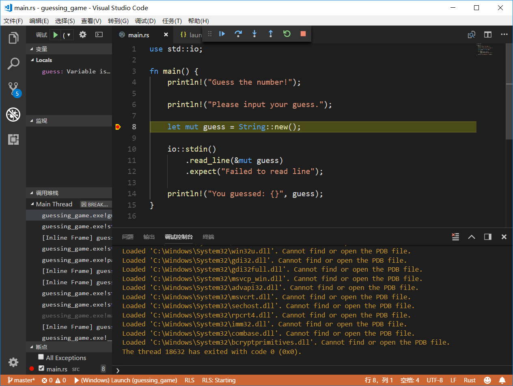

简介
最近因学习rust编程语言，需要在家中的 Win10 系统上安装rust开发环境。
安装的目标是在vscode中配合racer实现代码提示功能。
因刚开始接触rust对于rust的不同channel、toolchain及racer的情况都不太了解所以起了不少弯路，所以编写本文档记录下相关的过程。
主要参考了：
基础概念：
-
rustup：是rust官方推荐的rust多版本维护工具。它的功能类似于Python的Conda或pyenv这类工具。 -
cargo：是rust的构建工具。它的功能类似于Python的pip或Java的Maven等工具，既可以管理依赖也可以管理项目的构建。 -
racer：是一个支持vscode和emacs等编译器的rust代码自动完成的工具。 -
crate：rust中的程序库。
rust的安装
rust的版本选择
rust在 Windows 上有多个版本可供选择，主要是因为rust编译器目前还依赖于c的链接工具，一些第三方的库在构建时依赖于c工具链。早期的rust版本主要使用mingw来进行编译，这个版本被称为gnu版，从官方文档来看，这个版本应该是包含了mingw的一些工具，不需要安装额外的工具。另一个版本，也是官方推荐的版本是使用msvc，它使用Visual Studio进行构建，需要安装Visual Studio，以便在编译程序时使用相关的编译构建工具。加上cpu架构分i686和x86_64，这样版本选择就有了2*2=4个，再算上rust的三个版本通道stable、beta、nightly，一共就有了12个可供选择的版本。那么如何选择版本呢？官方更推荐使用msvc版本，racer的 github 上提示，从 2.1 版开始，它需要使用 nightly 版本才能编译。 我试了用stable进行编译，会产生错误#![feature(rustc_private, box_syntax)]，看错误信息是因为stable不支持feature这个函数（刚入门，不确定它是否是函数）。这样我就选择了nightly通道上的msvc版本。
根据选择的版本，我们需要安装以下程序：
-
rustup -
msbuilder及vcbuilder -
cmake
rustup及toolchain的选择
我使用 chocolatey 管理 Windows 上的软件安装。
在chocolatey网站上搜索rustup是搜索不到的，因为它不是stable软件。需要使用以下命令进行安装。
choco install rustup --pre
安装完rustup之后，默认它会安装stable msvc版的编译器及相关工具，我们需要切换至nightly msvc。使用以下命令来安装nightly版本，并将其设置为默认使用的版本。这里我还删除了stable版本。
rustup toolchain add nightly
rustup toolchain remove stable
rustup default nightly
使用rustup从官网下载的速度比较慢。也可以设置rustup的镜像仓库以提高rustup的下载速度。这个设置没有配置文件，只需要设置环境变量:
set RUSTUP_DIST_SERVER=https://mirrors.ustc.edu.cn/rust-static
set RUSTUP_UPDATE_ROOT=https://mirrors.ustc.edu.cn/rust-static/rustup
至此nightly msvc版本的rust编译器及其工具已经安装完毕。
编译工具链的安装
安装msbuild、vctools和cmake
安装完rust的工具后，就已经可以编译rust程序了。安装msbuild和vctools主要是因为在编译racer及其它依赖于c/c++编译器的程序库时需要它们。cmake则是因为racer的安装说明中提到编译racer时依赖于cmake。
使用以下命令可以完成编译工具链的安装
choco install microsoft-build-tools
choco install visualstudio2017-workload-vctools
choco install cmake
开始的时候我认为安装完microssoft-build-tools就会包含vctools，因为在msbuild 2015中是包含了c/c++工具链的。只安装microsoft-build-tools就直接编译racer会报找不到link.exe的错误，查询chocolatey上的包信息，可以看到microsoft-build-tools在当前实际指向visualstudio2017buildtools这个包，这个包的说明中有明确的说明
By default, the package installs only the bare minimum required (the MSBuild Tools workload). The easiest way to add more workloads is to use the workload packages:
- .NET Core build tools
- Visual C++ build tools
- Web development build tools.
它只包含了最小的依赖，如果需要使用vctools需要安装额外的workload，即visualstudio2017-workload-vctools。
至此，编译racer需要的工具都已经准备好了。
编译安装racer
按racer官方文档只需要使用cargo +nightly install racer即可编译安装了。但是我在编译时，遇到了几个问题。
设置crate镜像仓库
在使用cargo编译程序时会自动从crate仓库下载程序的依赖，过程类似于maven仓库或npm仓库中下载依赖。默认的crate仓库的访问速度非常慢，可以在%HOME%\.cargo\config中添加以下内容，以切换至中科大的crate镜像仓库：
[registry]
index = "git://mirrors.ustc.edu.cn/crates.io-index"
设置PATH环境变量
上面安装的一系列工具都没有设置到PATH中去，使用不方便，也会影响cargo命令的执行。我使用cmder，直接将对PATH的修改放在了cmder的设置中。相关内容如下：
set PATH=%ConEmuBaseDir%\Scripts;%PATH%;C:\Program Files\Git\bin;C:\tools\miniconda3\Scripts;C:\Program Files (x86)\Microsoft Visual Studio\2017\BuildTools\MSBuild\15.0\Bin\amd64;C:\Program Files\CMake\bin;C:\Program Files (x86)\Microsoft Visual Studio\2017\BuildTools\VC\Auxiliary\Build;C:\Users\Lenovo\.cargo\bin\;
主要添加了cargo和msbuild相关的目录。
开始编译
完成上述设置后，我开始使用cargo +nightly install racer构建racer，结果报错了：
Compiling same-file v1.0.2 (registry `git://mirrors.ustc.edu.cn/crates.io-index`)
error: failed to run custom build command for `libssh2-sys v0.2.8 (registry `git://mirrors.ustc.edu.cn/crates.io-index`)`
process didn't exit successfully: `C:\Users\Lenovo\AppData\Local\Temp\cargo-installN2GxW9\release\build\libssh2-sys-7b470d6e1aaab76f\build-script-build` (exit code: 101)
--- stderr
fatal: not a git repository (or any of the parent directories): .git
thread 'main' panicked at '
couldn't determine visual studio generator
if VisualStudio is installed, however, consider running the appropriate vcvars script before building this crate
', C:\Users\Lenovo\.cargo\registry\src\mirrors.ustc.edu.cn-61ef6e0cd06fb9b8\cmake-0.1.31\src\lib.rs:552:25
note: Run with `RUST_BACKTRACE=1` for a backtrace.
warning: build failed, waiting for other jobs to finish...
error: failed to compile `racer v2.1.3 (registry `git://mirrors.ustc.edu.cn/crates.io-index`)`, intermediate artifacts can be found at `C:\Users\Lenovo\AppData\Local\Temp\cargo-installN2GxW9`
Caused by:
build failed
从racer和rust的issue中查到是构建工具的问题，那么问题有可能出在msbuild或rust的cmake库，或者cmake本身。在查couldn't determine visual studio generator的时候还走了不少弯路，看到issue上贴出的代码还以为是rust和cmake库不支持vs2017，因为issue上的这个错误，就是因为rust cmake库上写死了vsbuild的版本，从代码来看高于vs2015的版本就不认了，有人也确实是使用vs2015就没有报这个错误。
在查阅rust cmake库的相关代码发现新版本已经是支持vs2017的了，那问题就有可能是出在vsbuild本身上了。
因为rust官网对于安装vs并没有明确，推荐的链接是安装完整的visual studio community并包含c/c++选项，而我安装的只是构建工具链。一开始我认为需要安装完整的visual studio，后来才想起来vsbuild和vctool的 2017 版在使用前是需要设置环境变量的。
先在控制台中运行
"C:\Program Files (x86)\Microsoft Visual Studio\2017\BuildTools\VC\Auxiliary\Build\vcvarsall.bat" x86_amd64
会配置好相关的环境变量，之后再使用cargo +nightly install racer进行构建和安装就没有问题了。
开发工具
编辑器集成
参照Rust 开发环境指北在vscode中安装rust相关插件，使用cargo在rust环境上安装相关的程序库和rust源码，就可以实现代码提示功能，此处不再缀述。
调试器
可参照这篇文章进行配置。只需要在vscode中安装C/C++和Native Debug这两个插件即可。

Comments